Saupe DLZ180x450 #
Nachdem ich mir vor einiger Zeit eine neue hübsche Drehmaschine angelacht habe, komme ich heute im Zug endlich mal dazu, diese hier in Ruhe vorzustellen.

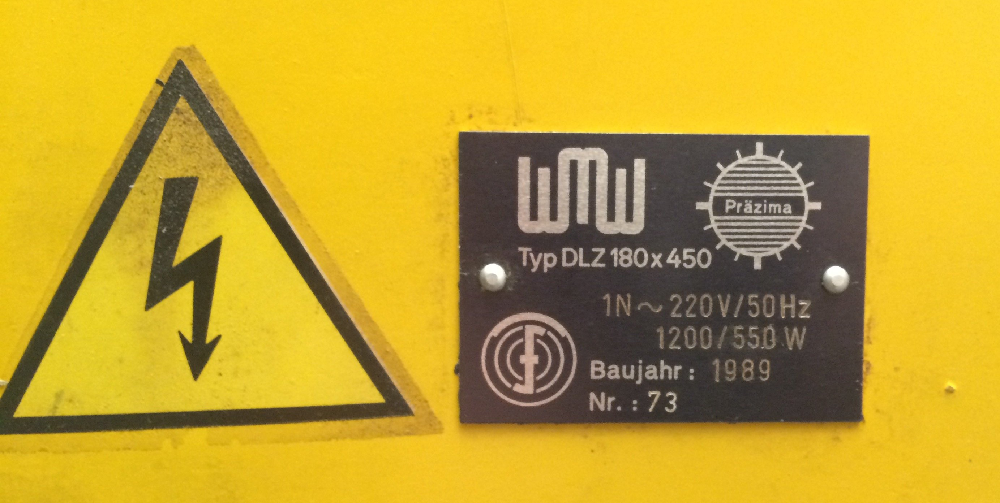
Es handelt sich um eine DLZ180x450 aus dem Hause Saupe in der ehem. DDR, die unter verschiedensten Labels in den Handel kam; u.a. wurde diese Maschine beim Neckermann-Versand unter den Firmennamen Bullcraft sowie vom WMW-Konglomerat vertrieben. Weiterhin taucht der Name “Präzimat” (zur Abgrenzung von der “Hobbymat” SD300) auf…
Ich hatte diesen Maschinentyp schon vor ein paar Jahren von einem befreundeten Dreher empfohlen bekommen, aber leider sind diese Maschinen sehr selten zu finden. Neulich wurden dann allerdings gleich zwei Stück gleichzeitig auf eBay angeboten (die andere Maschine ist ebenfalls in der Zerspanungsbude vorstellig geworden: Post #503000) und ich konnte nicht widerstehen; zumal die Maschine in München verkauft wurde und ich somit die Abholtour mit einem Besuch bei meiner Liebsten verbinden konnte ;-)
Nun ziert diese kompakte und präzise Maschine meine kleine Kellerwerkstatt und ich bin dabei, sie nach und nach wieder voll einsatzfähig zu machen. Ursprünglich wurde sie wohl von einem Modellbauer angeschafft, der auf ihr hauptsächlich Kunststoffteile angefertigt hat; daher fanden sich auch massig Kunststoffspäne im Wechselräderkasten und an all den weniger zugänglichen Stellen in der Maschine. Übernommen habe ich sie dann vom (vmtl.) Zweitbesitzer, der Fahrrad-Steckachsen auf ihr herstellen wollte und letztendlich doch nicht dazu kam.
Mit dabei waren der komplette Wechselrad-Satz, das originale Werkzeug-Set, die Bedienungsanleitung und ein paar Zubehörteile (Rollkörner, Bohrfutter, Drehstähle). Der Preis ist ja eh bei eBay einsehbar; ich habe am Ende 650€ für die Maschine gezahlt, was ich auch in Anbetracht der unten aufgeführten zu erledigenden Arbeiten als absoluten Glücksfall ansehe.
Hier noch schnell ein paar Übersichtsdaten der Maschine:
| Kenngröße | Kenndaten |
|---|---|
| Spitzenhöhe über Bett | 90mm |
| Spitzenweite | 450mm |
| Spindelnase | Kurzkegel 3 nach DIN55021 mit MK3 innen |
| Spindeldurchlass | 20mm |
| Reitstockkonus | MK2 |
| Verfahrweg Planzug | 90mm |
| Verfahrweg Oberschlitten | 95mm |
| Pinolenhub Reitstock | 60mm |
| Spitzenhöhe über Oberschlitten | 16mm |
| Leitspindelsteigung | 2mm |
| Drehzahlen mit dem originalen Motor | 63, 125, 250, 400, 800, 1600 Upm |
| Motorleistung | 0,55kW |
| Gesamtgewicht | 120kg |
| Platzbedarf (LxBxH) | 1060x580x330mm |
Diverse Eigenschaften dieser Maschine begeistern nachhaltig:
- große, ebene Ablagefläche oben auf dem Spindelstock für z.B. Wechselhalter, Messschieber, …
- echter Kurzkegel als Spindelnase
- automatischer Längs- und Planzug
- zwei gegeneinander angestelle Schrägkugellager vorne für die Hauptspindel
- Axialkugellager und Nadellager für radiale Lagerung des Leitspindelendes
- kugelgelagerte Planzugspindel
- Überlastkupplung im Zugspindel-Strang
- durchgehende T-Nuten im Planschlitten
- schrägverzahntes und im Ölbad laufendes Hauptgetriebe
- Schieberadgetriebe anstatt Wendeherz für Umkehr der Vorschubrichtung
Hier mal ein Blick in den Spindelstock:

Leider gibt es auch ein paar Schattenseiten an dieser Maschine:
- kombinierte Leit- und Zugspindel
- Sicherheitseinrichtungen (Not-Aus, Futterschutz, Wechselräder-Abdeckungs-Schalter) nicht funktionsfähig
- Schlosskasten voll mit verharztem Fett mit eingebetteten Spänchen –> blockiert bei automatischem Vorschub
- Handgriffe an Bettschlitten-Handrad und Planzug abgebrochen
- sagenhaft billig aussehende Skalenringe an den Handrädern
- Vorschub am Bettschlitten-Handrad: 22,5mm pro Umdrehung (WTF???)
- Klemmung des Reitstocks per Mutter, nicht per Hebel
- Klemmung des Bettschlittens auf der Unterseite der hinteren Führungsleiste –> blöd zu erreichen
- Einphasen-Wechselstrommotor mit Anlaufkondensator und Fliehkraftschalter –> “unruhiger” Lauf, ballert beim Einschalten voll los
Als erste Maßnahme wurde die Maschine vom gröbsten Dreck befreit und der Keilriemen erneuert. Ein XPZ-587 passt gut und läuft schön ruhig.
Zum Transport hatte ich den Bettschlitten abgenommen und kann daher ein Bild “unter den Rock” präsentieren:

Man erkennt vorn rechts die Klemmschraube für den Bettschlitten, oben links den Kupplungshebel für die Zugspindel-Funktion sowie oben rechts die Umschaltung zwischen Längs- und Planzug. Die Führungen sind in einem recht guten Zustand. Das Schabemuster ist auf der vorderen Prismenbettführung am Bettschlitten schon herunter, aber der Schlitten sitzt dennoch mit äußerst wenig Spiel auf dem Bett. Das führt dann auch dazu, dass das Auffädeln auf das Bett wüste Ausdrücke nach sich zieht, weil sich die Geschichte bei der kleinsten Fehlpositionierung heftig verklemmt und man daher sehr bedacht und umsichtig vorgehen muss.
Als nächste Amtshandlung hatte ich mir schon beim Kauf fest vorgenommen, einen Drehstrommotor mit FU zu verbauen. Es ist wieder ein Motor mit 1500Upm Nenndrehzahl und 0,55kW geworden. Als FU konnte ich einen Siemens MicroMaster 440 mit 0,75kW erstehen. Dankenswerterweise hat Saupe einen Motor mit Standard-Lochbild verbaut; leider hat die Achse des Original-Motors einen Durchmesser von 23mm und der neue Normmotor eine Achse von 19mm Durchmesser. Ich habe daher unter Verwendung des originalen Motors eine noch vorhandene Alu-Riemenscheibe auf 19mm ausgedreht und verwende diese, bis ich dazu komme, die alte (dreirillige) Riemenscheibe mit einer neuen Nabe zu versehen.

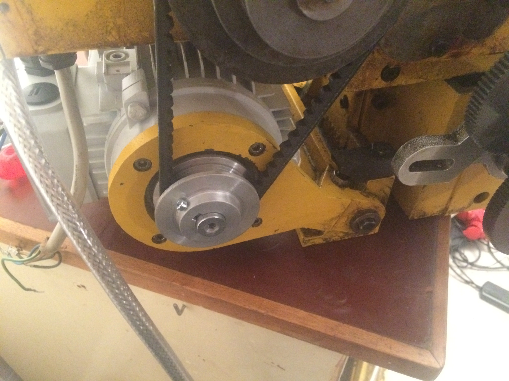
Eine weitere Eigenheit der Maschine ist das kleine Kästchen vorne links unter dem Spindelstock, das ein (oben OFFENENS) zweistufiges Getriebe für den Vorschub sowie den Hauptschalter und Not-Aus-Knopf beherbergt;

Dieses Kästchen ist nämlich von links an das Maschinenbett geschraubt:
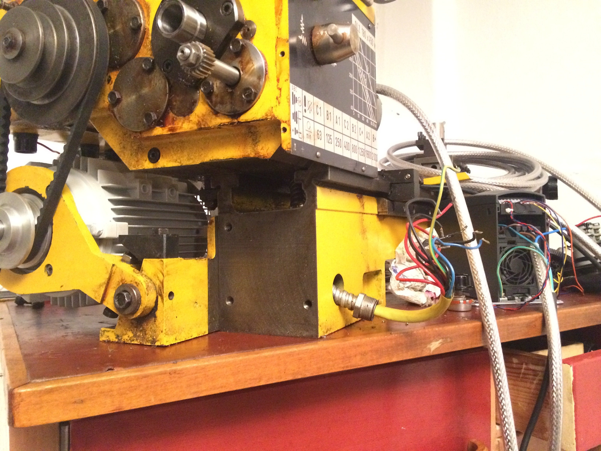
Hier bin ich stark versucht, ein gescheites Vorschubgetriebe zu konstruieren, um die lästige Wechselrad-Wechselei loszuwerden.
Eine Robling 800 Stfl., die ich in einer früheren Werkstatt mal mein Eigen nennen durfte, hat mich mit folgender Tabelle in dieser Hinsicht nachhaltig versaut:

Hier tauchen die häufig benötigten metrischen Gewindesteigungen sowie sinnvoll gestufte Vorschübe allesamt in einem 3x6-stufigen Träumchen auf…
Folgende Arbeiten habe ich mir für die nächsten Monate bisher vorgenommen:
- Montage eines bekannten Wechselstahlhalters mit 40 Rastpositionen in Größe “A” Hierbei werde ich wahrscheinlich den Oberschlitten durch einen Klotz ersetzen müssen, da die Spitzenhöhe über dem Oberschlitten nur 16mm beträgt und mir damit zusammen mit der Dicke der unteren Wange der Stahlhalterkasette nur noch 8mm für Drehstähle bliebe.
- Bau eines Schaltschranks für den FU; Einbau eines Potis für die Geschwindigkeitseinstellung an der Maschine
- Nabe für das alte Riemenrad, damit ich mit dem neuen Motor wieder alle Riemenstufen zur Verfügung habe Momentan kann ich nur die langsamste Stufe des Riemengetriebes nutzen. Für hohe Spindeldrehzahlen müsste ich daher den Drehstrommotor unangenehm schnell drehen lassen.
- neue Handräder für Reitstock, Ober- und Bettschlitten sowie den Planzug mit vernünftigen Griffen (v.a. kein Plastik!) und schicken Skalenrädern
- Zerlegung des Schlosskastens, Reinigung, evtl. Reparatur (?)
- finale Anpassung einer bereits vorbereiteten Planscheibe an die KK3-Spindelnase
- Reitstockklemmung wie bei der µkrodreh vom Stefan (siehe Post #71479), evtl. sogar Umbau auf Zahnstangen-Pinole…
- Bettschlitten-Klemmung von oben zugänglich machen
- Reitstockklemmung auf dem Bett per Handhebel
- Schmiernippel sowie Schmiernuten in Bett- und Planschlitten
- neue Filzabstreifer für die Bettschlittenführung anstatt der zierlichen Plastikteile
Adaption einer Planscheibe #
Weiter geht es hier mit der Adaption einer bereits vorbereiteten Planscheibe. Konkret musste nur noch der Kurzkegel fertiggedreht werden, da ich diese Planscheibe schon etliche Jahre herumliegen hatte und jetzt erst mit der DLZ180x450 die passende Maschine bekommen habe.
Hier sieht man schon mal eine Vorschau aufs Endergebnis:
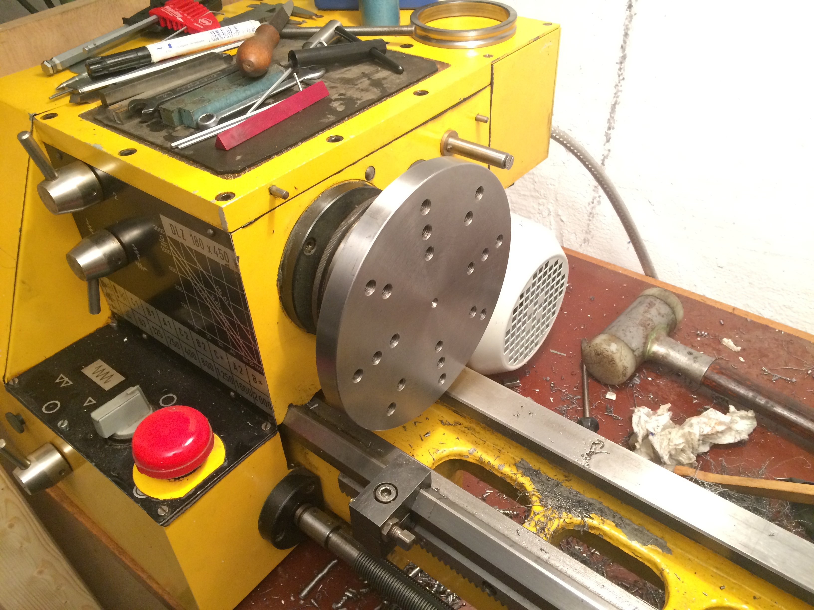
Die rohe Ronde für die Planscheibe hatte ich mal vom Schrott gerettet und relativ schnell schon die Bohrungen und Gewinde eingebracht. Dann hab ich mich ein paar Jahre lang mehr dem Studium gewidmet und jetzt erst hin und wieder mal Zeit zum Basteln. Die Scheibe wurde auf einer anderen Maschine (Hallo Hartmut ;-) ) auf der Rückseite plangedreht und ein Ring von 100mm Außendurchmesser mittig aufgeschraubt. In diesem Ring, in den ich jetzt nur noch den kurzen Kegel drehen musste, wurden dann auch schon vorbereitend die drei M10-Gewinde für die Stehbolzen zur KK-Aufnahme eingebracht.
Ausgangssituation war also, dass ich eine Drehbank mit Dreibackenfutter hatte und die Planscheibe “rückwärts” spannen musste, um den KK zu drehen. Hier half ein Teil aus der Schrottkiste, das mal Halter für ein Dreibackenfutter auf einem Rundtisch war; eine Stahlronde mit einem mittig aufgeschraubten Alu-Knubbel:
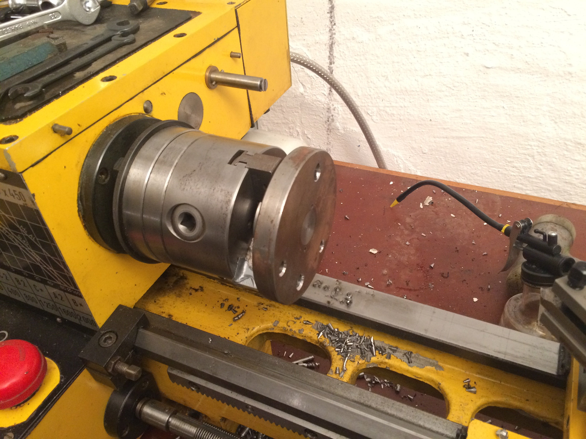
Dieses Teil wurde dann mit einem Breitschlichtmeißel von Hand plangedreht (der Vorschub war noch nicht wieder funktionsfähig, s.u.):
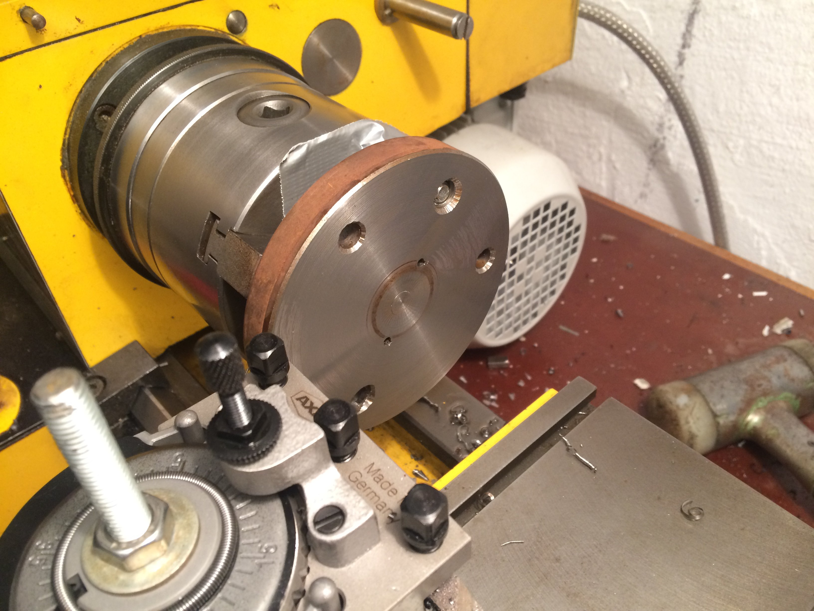
Hier gibt es noch eine Detailansicht vom Drehstahl:

Die Oberfläche ist recht ok geworden, und mit einem 1/100mm-Puppitast konnte ich keine Unebenheit feststellen; das sollte ja aber sowieso so sein, wenn man die Einspannung nicht verändert. So konnte dann die Planscheibe gegen das im Futter befindliche Teil mittels zweier M8-Schrauben gespannt werden. Der Oberschlitten war vorher schon auf den Kegelwinkel des KK eingestellt.

Der Kurzkegel konnte jetzt gedreht werden. Problematisch ist dabei allerdings üblicherweise, den Kegeldurchmesser nicht zu groß geraten zu lassen, damit eine leichte Vorspannung entsteht, wenn man den Flansch auf die Spindelnase schraubt. Hierzu hat sich bei mir folgendes Verfahren etabliert, welches jetzt auch schon mehrfach reproduzierbar gute Ergebnisse geliefert hat.
Zunächst dreht man mit geklemmtem Bettschlitten den Kegel soweit vor, dass er etwa halb auf die Spindelnase passt. Hier reicht es normalerweise aus, den Durchmesser mit einem Messschieber zu bestimmen und mit dem Innendurchmesser im Drehteil zu vergleichen. Dabei wird der Planschlitten genullt, sodass man beim Zurückkurbeln des Oberschlittens freifahren kann und trotzdem den exakten Kegeldurchmesser wieder trifft. Durch den Bettschlittenanschlag und die Nullung des Planschlittens ist die Position des Oberschlittens eindeutig festgelegt und reproduzierbar, wenn man zwischendurch den Plan- oder Bettschlitten verfahren muss, um den Kegel an der Spindelnase anzuprobieren. Der Bettschlitten kann also jetzt zur Seite gefahren werden. Das Dreibackenfutter wird von der Spindelnase abgeschraubt; das Werkstück (in diesem Fall der Aufspannknubbel und die daranhängende Planscheibe) muss aber unter allen Umständen eingespannt bleiben und darf unter keinen Umständen durch zu unsanftes Absetzen in der Einspannung verrutschen. Der gerade vorgedrehte Kegel wird jetzt von Hand gegen die Spindelnase gehalten und sollte etwa halb (oder soweit man sich halt getraut hat, blind vorzuarbeiten) heraufrutschen. Mit Endmaßen, Fühlerblattlehren oder dem Messschieber wird jetzt der Abstand zwischen der Plananlagefläche der Spindelnase und der planen Fläche des zu drehenden Kegels gemessen. Um dieses Maß muss jetzt der Bettschlittenanschlag in Richtung Spindelstock versetzt werden (minus ca. 5/100mm). Hierzu wird jetzt erstmal das Futter samt Werkstück wieder montiert und dann mit angeschlagener Messuhr der Bettschlittenanschlag in Richtung Spindelstock versetzt. Der Planschlitten wird wieder auf die Nullposition gefahren (Umkehrspiel beachten!). Damit ist der Oberschlitten jetzt exakt wieder auf dem gleichen Durchmesser, allerdings um ein paar Millimeter (wie weit man halt den Bettschlittenanschlag verfahren hat) weiter beim Futter. Somit wandert auch der Innenkegel genauso weit in das Werkstück hinein. Wer mutig ist, hat den Bettschlittenanschlag auf die Endposition versetzt. Hierbei kann die Spantiefe so groß werden, dass der Innendrehstahl anfängt zu rattern. Da der Planschlitten jedoch bei der Endposition genullt ist, kann man für die ersten paar Schruppschnitte allerdings den Planschlitten problemlos zur Mitte hin verstellen, damit die Spantiefe abnimmt. Der Endschnitt muss aber in jedem Fall wieder mit dem Bettschlitten am (verschobenen) Bettschlittenanschlag und dem Planschlitten in der Nullposition erfolgen.
Der Innendrehstahl wurde zur Dämpfung der Schwingneigung mit einem Holzkeil gedämpft:

Wenn dann alles passt, lässt sich der gerade gedrehte Kegel fast ganz auf die Spindelnase aufsetzen und zieht sich beim Festschrauben soweit fest, dass er nur mit einem sanften Schlag des Handballens wieder abzubekommen ist:
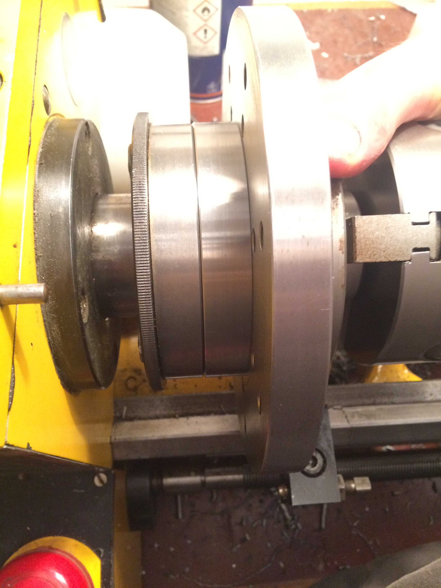
Und wenn man sich die passende Drehbank zum bereits vorhandenen Planscheiben-Rohling anschafft, passt diese gerade noch über den Bettschlitten:
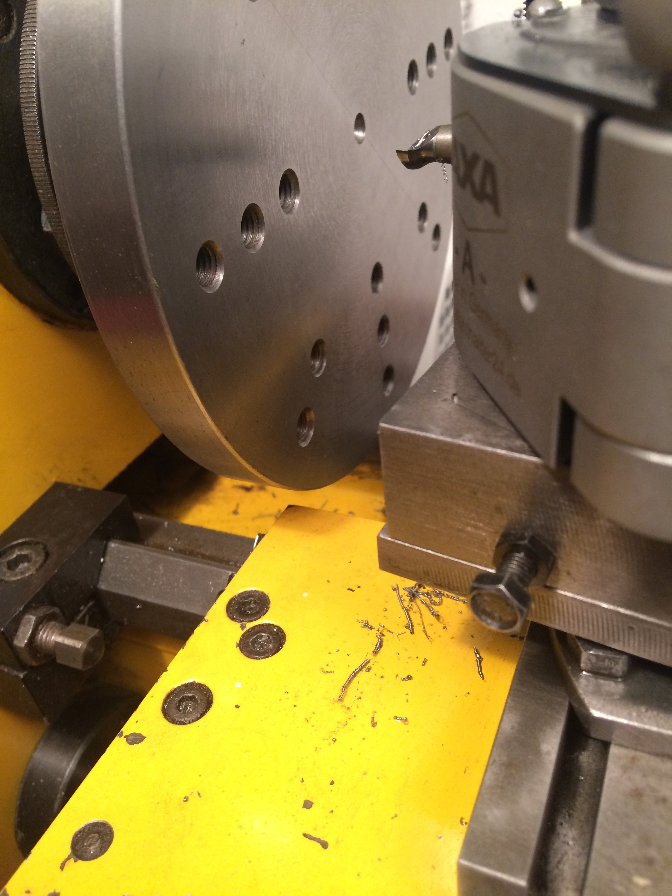
Zum Abschluss noch ein Bild vom Endprodukt. So lässt es sich arbeiten:
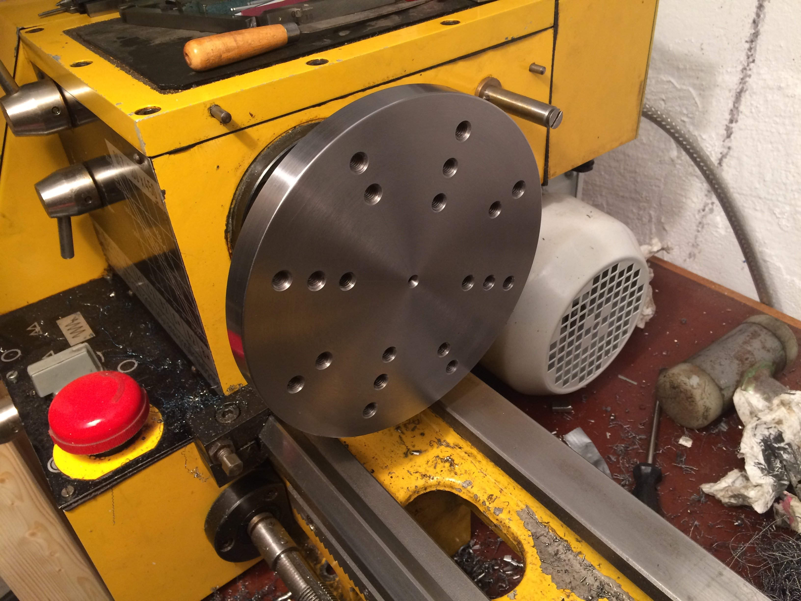
Der gemessene Planschlag liegt jetzt (zwischen dem äußeren Lochkreis und dem Außendurchmesser gemessen) bei ca. 1/100mm. Der Außendurchmesser wurde in dieser Aufspannung endgültig überdreht.
Reinigung des Schlosskastens #
Beim Kauf der Maschine war leider der Vorschub nicht funktionsfähig. Konkret war der Scherstift der Leit-/Zugspindel abgeschert und irgendwas im Schlosskasten blockierte. Also ab auf den OP-Tisch mit dem Kandidaten:
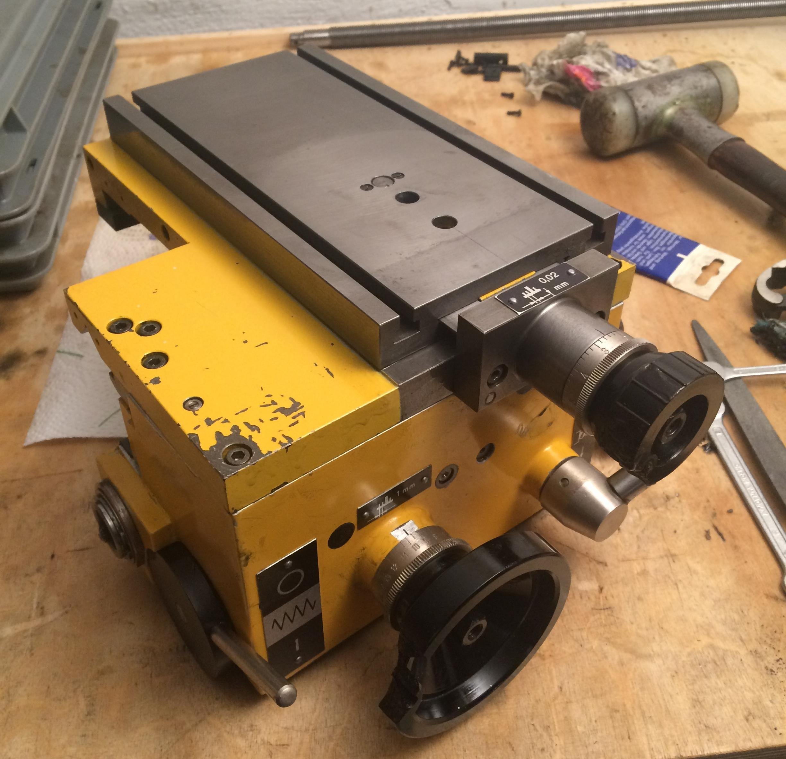
Los geht es auf der Unterseite, wo ein Blechdeckel zunächst den Blick auf die Innereien verwehrt:

Sobald man diesen abnimmt, zeigt sich das Grauen in seiner ganzen Schönheit:
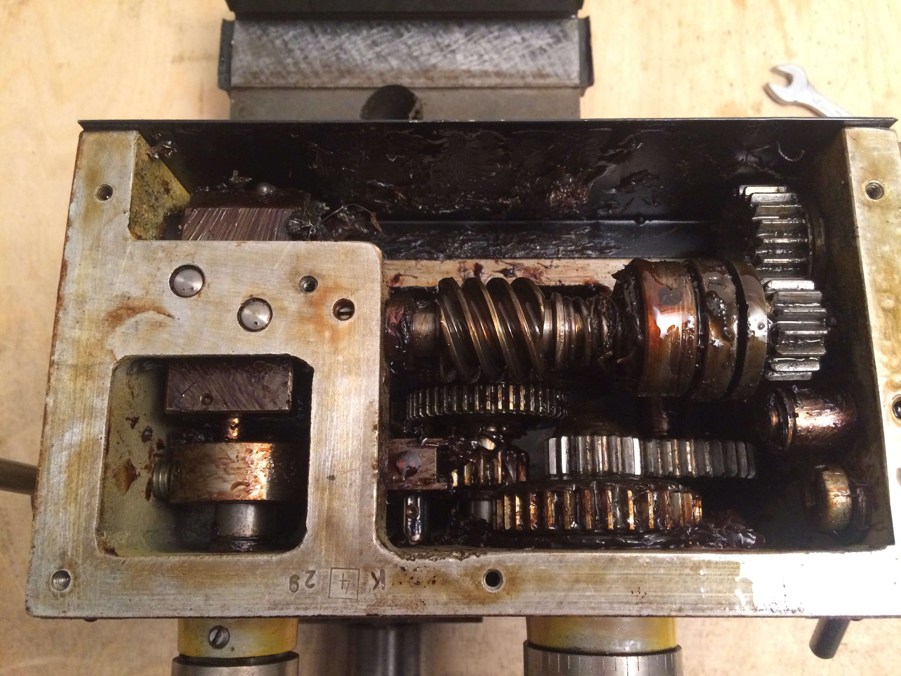
Kleiner Nebenschauplatz: die Bettschlittenführung hat vorn am Prisma bereits das Schabemuster größtenteils verloren; die hintere Seite sieht noch ganz ok aus:

Die Planschlittenmutter (M10x1 links) ist mit zwei M3-Senkkopfschrauben am Planschlitten befestigt und muss ab, damit man selbigen abnehmen kann und somit von oben an die Innereien des Schlosskastens herankommt:
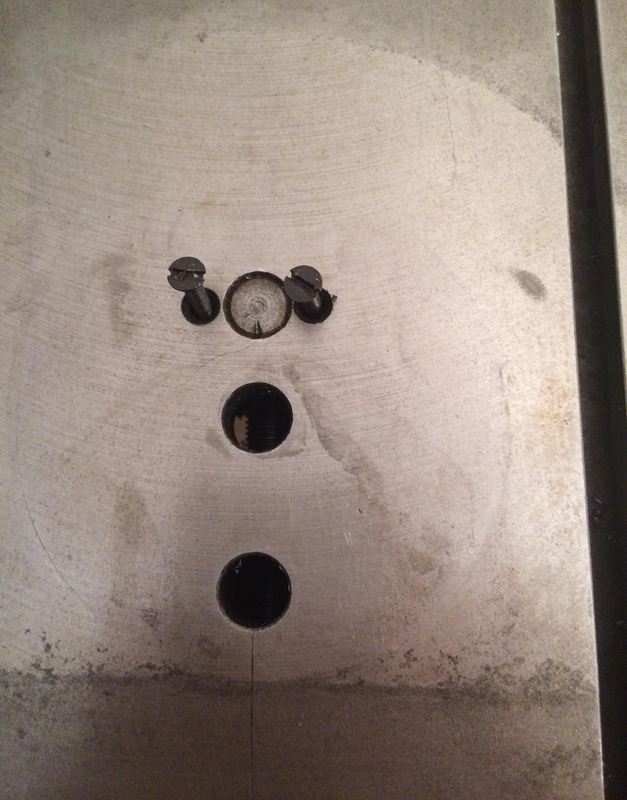
Die Führung des Planschlittens ist ca 5/100mm am vorderen Ende eingelaufen. Mit dem Fingernagel ist der Absatz spürbar. Erstmal möchte ich allerdings mit der Maschine arbeiten und ein Gefühl dafür bekommen, was im aktuellen Zustand noch machbar ist.

Dann kann der Bettschlitten vom Schlosskasten abgeschraubt werden:
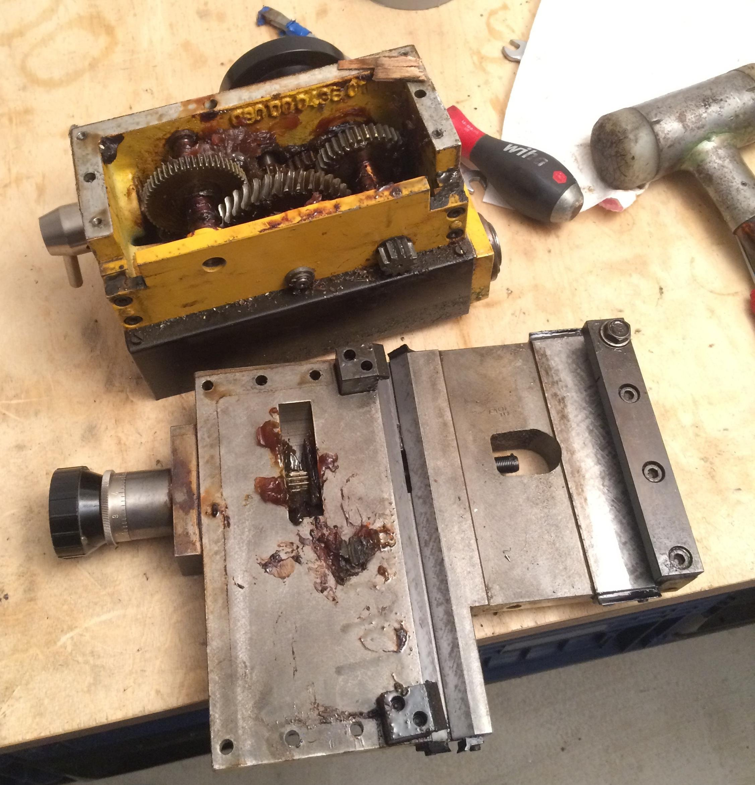
Auch hier sind Massen an altem Fett und Spänen zu finden:

Die abgeschraubten Teile kommen direkt zum Einweichen ins Petroleumbad:
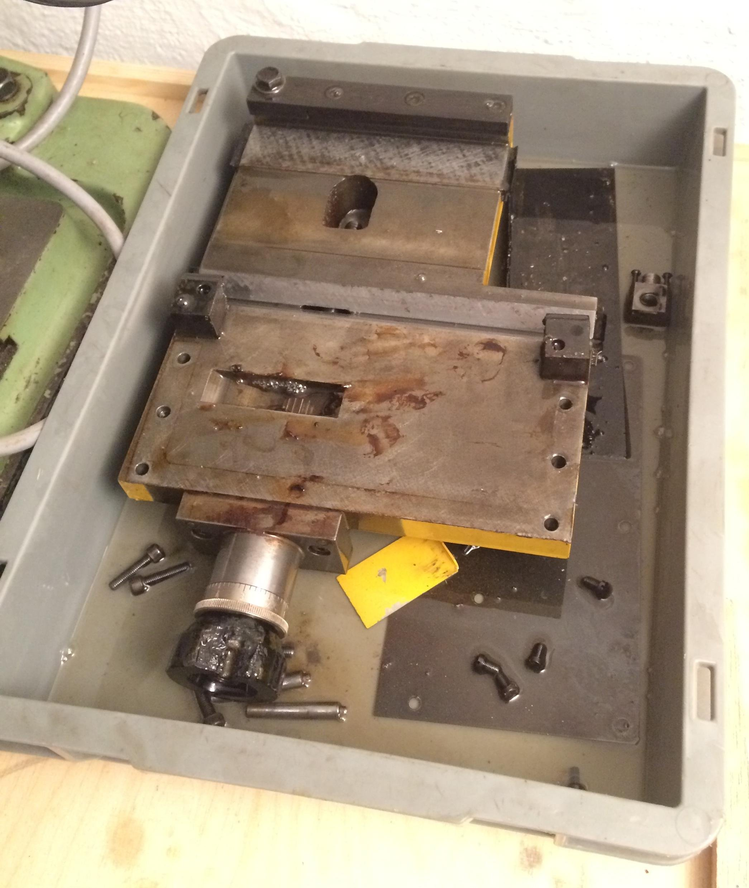
Hier zeigt sich dann auch gleich der erste Grund für die Blockage des Getriebes. Eine der Zahnlücken war mit Spänen und Fett verklebt:

Also gleiches Spiel; Einweichen in Petroleum und Abbürsten des gröbsten Drecks:

Immer wieder tauchen Späne an den unmöglichsten Stellen auf:
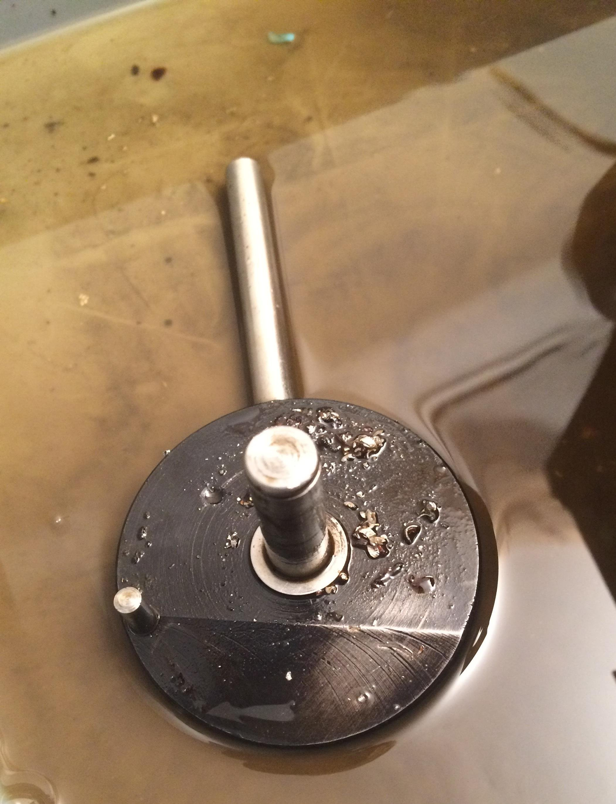
Langsam ist Fortschritt erkennbar:

Und nach schier endloser Putzerei lässt sich das Innere dann wieder halbwegs vorzeigen. Der Kraftverlauf ist folgendermaßen: Unten links im Bild treibt die kombinierte Leit-/Zugspindel diese ganze Mimik an. Über das erste Räderpaar geht es an eine Überlastkupplung, die gleichzeitig dazu dient, den Vorschub manuell einzukuppeln. Von dort aus wird eine viergängige Schnecke versorgt, die permanent in das große Schneckenrad eingekuppelt ist.

Vom großen Schneckenrad geht es wahlweise über eine Klauenkupplung auf die Planspindel oder über ein verschobenes Zahnrad auf den Längszug mittels Antrieb des Handrades. Im Bild ist gerade der Planzug eingekuppelt:

Die Leitspindelmutter sieht auch noch ganz ok (bis auf zwei kleine Ausbrüche) aus:

Bzgl. Reinigungsbedarf ist der Schlosskasten damit abgeschlossen und es geht an den Bettschlitten:
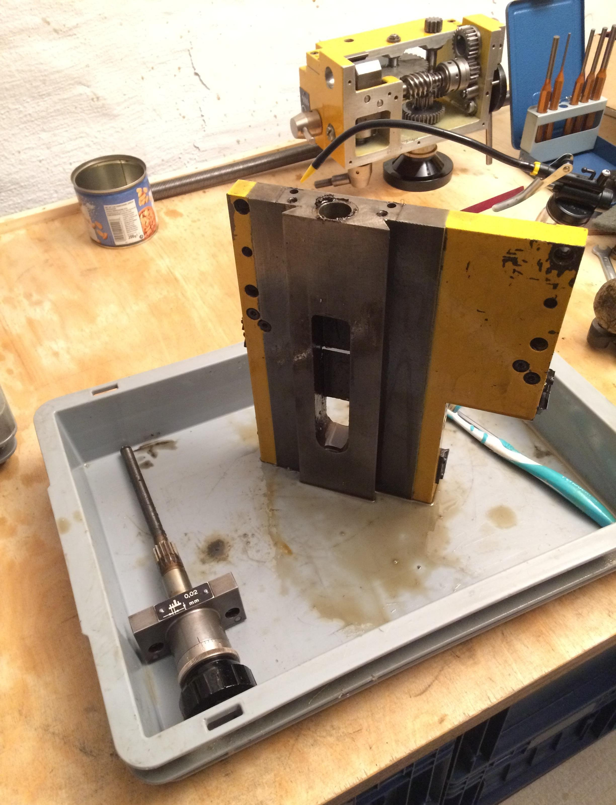
Auch hier ist nach dem Einsatz von ein bisschen Petroleum und Scotch Brite Fortschritt zu verzeichnen:

Noch ein paar Kleinteile säubern und dann kann es auch schon wieder an den Zusammenbau gehen:

Die Zahnräder im Schlosskasten habe ich jetzt erstmal mit MoS2-Fett geschmiert:

Das Getriebe lässt sich jetzt wieder wunderbar von Hand durchdrehen und der Schlitten flutscht ganz wunderbar auf dem Bett hinterher. Als nächstes geht es an den Lagerbock der Leitspindel und die Reparatur des Anbindungsstücks der Leitspindel, in dem der Scherstift abgeschert ist. Leider hatte jemand den Scherstift mit einer Spannhülse “repariert” und diese hat im Inneren des Übergangs zur Leitspindel wunderbare Fressspuren hinterlassen.
Wird schon machbar sein…
Wechselräder #
Die Wechselräder der DLZ180x450 haben Modul 1 und eine Bohrung mit 20mm Durchmesser. Eine Passfedernut mit einer Breite von 4mm und einer Höhe (ggü der Bohrungswand) von 1.8mm.
Folgende Wechselräder waren bei mir dabei:
mit 8mm Zahnbreite und einer Nabenbreite von 10mm: 120 (M), 110 (M), 100 (P), 90 (M), 80 (M), 75 (P), 2 Stk. 70 (P), 65 (P), 2 Stk. 60 (P), 2 Stk. 50 (P), 45 (M), 40 (P)
mit 10mm Zahnbreite und einer Nabenbreite von 12.2mm: 32 (M), 30 (M)
Hierbei bedeutet (M), dass die Zahnräder aus Metall gefräst sind. (P) steht für Spritzguss aus irgendeinem Plastik.
Schaltschrank #
Neulich hatte ich dann endlich Zeit, den FU in einen anständigen Schaltschrank einzubauen. Zunächst mal wurde sichergestellt, dass der Motor immer noch im Dreieck angeschlossen ist:
Der verwendete FU ist ein Siemens Micromaster 440:
Hier ist der dann zusammengeklöppelte Schaltschrank dann zu sehen:
Einen Schaltplan gibt es auch noch:
Ein Lüfter bläst unten rechts frische gefilterte Luft in den Schaltschrank. Diese kann nach oben links durch einen weiteren Filter entweichen, sodass dem FU hoffentlich nicht zu heiß wird:
Weiterhin bietet es sich evtl. an, irgendwann einmal einen Bremswiderstand nachzurüsten. Genug Platz ist definitiv noch vorhanden und der Widerstand würde damit “optimal” im Luftzug sitzen.
Den Schaltschrank habe ich dann neben der Drehbank an die Wand geschraubt:
Es ist schon schön, jetzt einfach nur den Hauptschalter drehen zu müssen und schon kann es losgehen :-)